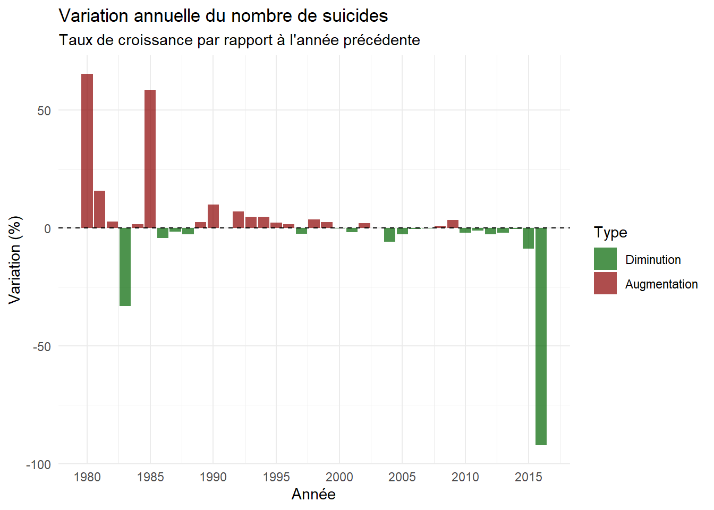
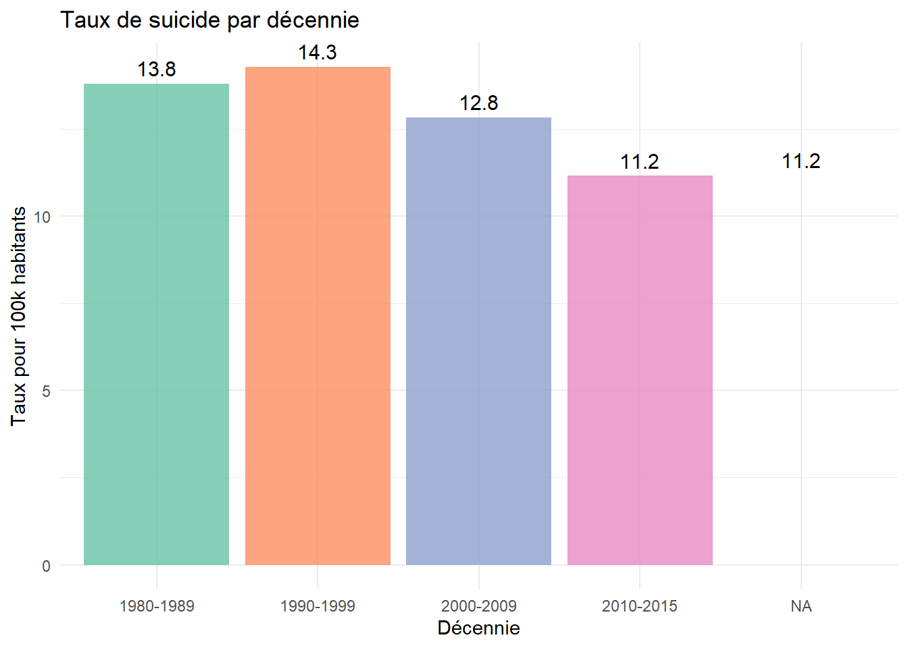

Chapitre 3 : Analyse Temporelle
1 Évolution Temporelle des Suicides
1.1 Tendance Globale 1980-2015
1.1.1 Évolution du taux de suicide (pour 100k habitants)
1.1.2 Statistiques descriptives par décennie
| decennie | Nombre de suicides | Population totale | Taux moyen (100k) | Taux min | Taux max |
|---|---|---|---|---|---|
| 1980-1989 | 1 697 608 | 12 308 292 174 | 13.79 | 0 | 219.22 |
| 1990-1999 | 2 344 775 | 16 417 314 397 | 14.28 | 0 | 300.75 |
| 2000-2009 | 2 470 449 | 19 255 057 032 | 12.83 | 0 | 204.92 |
| 2010-2015 | 1 376 607 | 12 345 028 266 | 11.15 | 0 | 187.06 |
| NA | 109 028 | 976 153 997 | 11.17 | 0 | 250.00 |
1.2 Analyse des Variations Annuelles
1.2.1 Taux de croissance annuel

Analyse par périodes :
🔴 Début des années 1980
On observe des augmentations très fortes, avec des pics supérieurs à +50 %.
Cela indique une forte instabilité du phénomène au début de la période (possibles changements sociaux, économiques ou qualité des données).
🟢 Milieu des années 1980
Une chute importante (environ -30 %), suivie d’une stabilisation.
Cela suggère une réduction notable du nombre de suicides après les pics initiaux.
🟢 Années 1990 – début 2000
Les variations sont faibles, proches de 0 %.
Alternance de petites hausses et baisses → stabilité relative du phénomène.
🟢 Années 2005 – 2014
Tendance globalement négative (plus de barres vertes).
Cela traduit une diminution progressive du nombre de suicides.
Conclusion:
Le phénomène est très instable au début de la période.
Il devient plus stable à partir des années 1990.
Une tendance à la baisse est visible dans les années récentes.
1.2.2 Identification des années critiques
=== TOP 5 HAUSSES ===
| Année| Total suicides| Variation %| Variation absolue|
|-----:|--------------:|-----------:|-----------------:|
| 1980| 153400| 65.32| 60610|
| 1985| 197115| 58.63| 72851|
| 1981| 177705| 15.84| 24305|
| 1990| 204043| 10.08| 18687|
| 1992| 218446| 6.96| 14210|
=== TOP 5 BAISSES ===
| Année| Total suicides| Variation %| Variation absolue|
|-----:|--------------:|-----------:|-----------------:|
| 2016| 16238| -92.18| -191389|
| 1983| 122166| -33.04| -60269|
| 2015| 207627| -8.63| -19608|
| 2004| 244196| -5.84| -15140|
| 1986| 188684| -4.28| -8431|Le tableau des top 5 hausses montre les années où le nombre de suicides a connu les plus fortes augmentations . En 1980 et 1985 enregistrent des hausses importantes de +65 % et +58 %, soit respectivement 60 610 et 72 851 suicides . Ces années peuvent correspondre à des événements sociaux, économiques ou politiques ayant pu influencer le taux de suicide.
Le tableau des top 5 baisses met en évidence les années où le nombre de suicides a le plus diminué. La plus forte baisse est observée en 2016 avec un recul de 92 % (soit 191 389 suicides en moins), suivie de 1983 et 2015. Ces années représentent des périodes critiques où des facteurs protecteurs, des interventions ou des changements démographiques ont pu réduire drastiquement le nombre de suicides.
En résumé, l’identification de ces années critiques permet de repérer les tendances exceptionnelles dans la série temporelle et de cibler les périodes nécessitant une analyse plus approfondie.
1.3 Comparaison par Périodes
1.3.1 Analyse pré-2000 vs post-2000
| periode | Nombre total | Population | Taux moyen (100k) | Nombre d’années | Moyenne annuelle |
|---|---|---|---|---|---|
| 1980-1999 | 4 135 173 | 29 548 195 678 | 13.99 | 21 | 196 913.0 |
| 2000-2015 | 3 863 294 | 31 753 650 188 | 12.17 | 17 | 227 252.6 |
**Interprétation :**- Le nombre total de suicides est légèrement plus bas après 2000.- Le taux moyen pour 100k habitants a diminué de 13,99 à 12,17. → proportionnellement, moins de suicides par population.- La moyenne annuelle est plus élevée après 2000, car la population a augmenté.
=== Test t de Student ===t = -5.018 p-value = 1.6e-05 Différence significative : OUI ✓ Le t-test compare la moyenne annuelle des taux de suicide par 100k habitants entre les deux périodes pour voir si la différence est statistiquement significative. Résultats du test : t = -5.018 → La statistique t négative signifie que le taux moyen post-2000 est plus bas que le taux pré-2000. p-value = 1.6e-05 → Très petite valeur, bien en dessous de 0.05, ce qui signifie que la différence n’est pas due au hasard. Différence significative : OUI ✓ → On peut conclure qu’il y a une différence statistiquement significative entre les taux de suicide pré-2000 et post-2000.
1.4 Évolution par Décennie

1.5 Conclusions de l’Analyse Temporelle
Points clés identifiés :
Tendance générale : Variation de -82.5% entre 1980 et 2015
Pic historique : Année 2002 avec 259 376 suicides
Point bas : Année 2016 avec 16 238 suicides
Évolution du taux :
- 1980 : 14.11 pour 100k habitants
- 2015 : 10.72 pour 100k habitants
- Variation : -3.4 points
- Périodes critiques :
- Décennie la plus touchée : 2000-2009